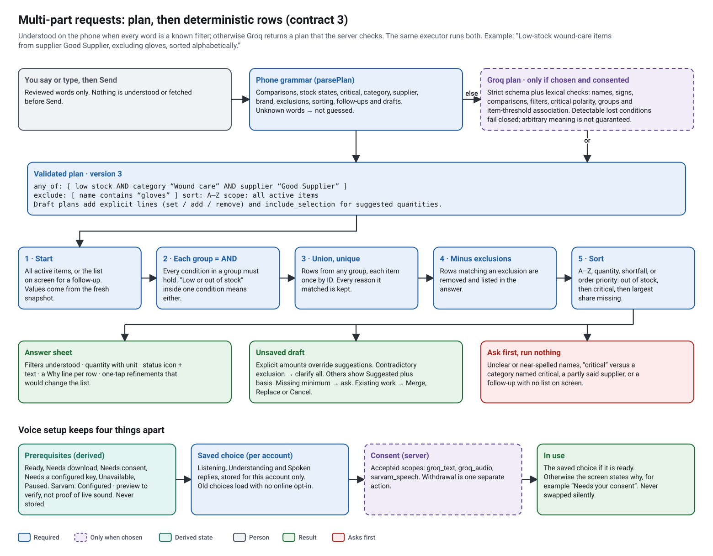

CareKosh AI voice assistant — end-to-end review (13 October 2026)
Scope. This review covers the whole assistant path:
- voice and typed questions, through understanding and the stock answer;
- the answer sheet and spoken replies, including Sarvam;
- local order drafts and the touch-confirmed order with its PDF.
It also records what was changed on 13 October 2026, the evidence for each change, and what is still open.
State reviewed. Branch feature/backend-hardening-ai-voice-agent-foundation at 4bd1dff, plus uncommitted work in the main checkout. Nothing was committed, pushed or deployed. No live database was used. No paid API call was made.
Evidence labels (same as the 7 October documentation audit):
- VERIFIED IN CURRENT CODE: read in the source at the line given.
- VERIFIED BY REPRODUCED TEST: a test in this repository shows it, and it passed on 13 October 2026.
- NOT VERIFIED: needs a phone, a live provider or the deployed service.
Decisions at a glance#
| Question | Decision | Why |
|---|---|---|
| Ready for staging testing? | Yes, for controlled testing after deployment of this reviewed candidate. | Independent working-tree checks passed 458 backend tests in both schema modes and 344 mobile tests. The clean publication candidate passes 458 backend and 341 mobile tests (§13). Use an operator-owned Sarvam key for the first staging pilot. Deploy the backend before testing cloud contract 3 in the new APK. Detected unsupported advanced requests must not silently downgrade. Contract 3 adds no route/migration; the earlier Sarvam implementation still requires migration 0011. |
| Ready for production? | No, pending live acceptance and operator setup. | Verify the new APK on the OnePlus, real Groq interpretation and real Sarvam decoding/playback, plus the production deployment/privacy controls. Public third-party personal-key use needs a permitted provider arrangement (§4.3). Alba remains a separate experimental gate; keeping it paused does not block verified device/Sarvam speech. |
1. Trace map#
Line numbers are for the working tree on 13 October 2026. All paths are relative to the repository root.
1.1 Spoken question to spoken answer#
- Microphone permission and capture.
-
startRecordingasks for permission, waits until CareKosh is back in the foreground, and sets the audio mode to "do not mix" (vitaltrack-mobile/components/assistant/AssistantExperience.tsx:730). -MicrophoneCapture.startbegins the recording (vitaltrack-mobile/features/assistant/capture.ts:38). - A 28-second timer stops the recording. - Live words while speaking. The native live recorder sends partial transcripts. The "Ask Care Coach" dock shows them only while recording (
vitaltrack-mobile/components/assistant/AssistantDock.tsx:60). - Final transcript.
stopRecording(AssistantExperience.tsx:699) calls one of two sources: - Moonshine on the phone (vitaltrack-mobile/features/assistant/offlineVoice.ts:105); - with the separategroq_audioconsent, Groq Whisper throughPOST /api/v1/ai/transcribe.
A failed online transcript is never replaced by an offline one. The temporary recording is deleted in finally.
4. Editable transcript and explicit Send. The transcript goes into the text box. Nothing is understood or fetched until Send is tapped.
5. Understanding. ask() (AssistantExperience.tsx:526) first tries the phone (routeLocally, vitaltrack-mobile/features/assistant/queries.ts), in this order:
- an exact item read;
- draft follow-ups;
- the complete version 3 inventory/complex-draft grammar (parsePlan);
- the version 2 grammar for compatible simple requests;
- the legacy phrases.
Only unmatched text goes online, after this account chose Groq understanding and the server confirms groq_text consent. Contract 3 is preferred. Basic requests can use an older contract; detected advanced conditions that the server cannot represent ask for a backend update instead. Local version 3 plans do not need cloud interpretation support.
6. Validated plan. Every answer from Groq is checked against the strict contract twice: on the server (vitaltrack-backend/app/schemas/ai.py, then ground_plan in app/services/ai_provider.py:234) and on the phone (validatePlan, vitaltrack-mobile/features/assistant/contracts.ts:115). ai_plan_grounding.py also checks detectable missing/invented conditions, polarity, grouping and quantity-to-item association. Version 2 answers are upgraded with the same meaning (toPlan). These checks cannot certify arbitrary language.
7. Owner-scoped, complete snapshot. inventorySnapshot (vitaltrack-mobile/features/assistant/snapshot.ts:28) fetches the signed-in account's full item list. A cache counts only if it was stamped for this session and has not been invalidated. While stock edits are still saving, it refuses to answer. Offline answers are marked "Last known".
8. Deterministic execution. evaluateSelection (vitaltrack-mobile/features/assistant/selection.ts:176) filters, explains and sorts the rows on the phone. Drafts use prepareDraftResult (vitaltrack-mobile/features/assistant/drafts.ts:65). No model output is ever executed as code or as an ID.
9. Answer sheet. The overlay shows:
- the filters as applied;
- counts;
- a table with item, quantity with unit, and status as an icon plus text;
- a "Why" line on every row;
- expandable recorded details (vitaltrack-mobile/components/assistant/AnswerList.tsx).
10. Narration. playAnswer (AssistantExperience.tsx:373) reads the short answer text with the chosen voice:
- Device voice speaks on the phone.
- Sarvam sends only the answer text to POST /api/v1/ai/speak. The server checks the WAV, and the clip plays in a player made for that reply (vitaltrack-mobile/features/assistant/cloudSpeech.ts:33-108). The temporary file is deleted in finally.
- Offline fallback, if you opted in, reads the same text once when Sarvam fails before playback has started (narrateWithFallback). Detected partial playback suppresses fallback, even if an error arrives without a playing=true sample.
1.2 Typed question#
A typed question uses the same ask() path from step 5 onwards. Typing never starts the microphone or a speech model (VERIFIED BY REPRODUCED TEST: vitaltrack-mobile/tests/assistant-inline.test.cjs, "typed compound query …").
1.3 Draft to saved order and PDF#
- The assistant only writes the in-memory, session-scoped draft (
writeDraft,drafts.ts). The draft is cleared on logout, on an account change and on app restart. - "Review unsaved order draft" opens Create Order. The assistant imports no order-save service.
- The only commit point is the touch confirmation on Create Order (
generatePDF,vitaltrack-mobile/app/order/create.tsx:208). It works in four steps: - it re-reads the inventory and asks you to review again if anything changed; -beginSubmission(drafts.ts:146) fixes onelocalId; -createOrderMutation.mutateAsync(create.tsx:263) sends the authenticatedPOST /api/v1/orders; - the server returns the existing order for a repeatedlocalId(vitaltrack-backend/app/api/v1/orders.py:279,_find_order_by_local_idat:159). - The PDF is built from the order the server returned (
create.tsx:268). A re-export uses the same saved order.
1.4 Where the server may write, and where it never does#
| Route | May write | Never writes |
|---|---|---|
GET /ai/capabilities |
nothing | — |
PUT /ai/consent |
ai_consents (this account) |
inventory, categories, orders, activity, audit |
POST /ai/interpret, /ai/transcribe, /ai/speak |
ai_usage (reserve, then settle) |
inventory, categories, orders, order items, activity, audit |
PUT/DELETE /ai/sarvam-key |
ai_sarvam_credentials (encrypted) |
the same business tables |
POST /auth/* |
authentication records | — |
POST /orders |
order, order-item and associated activity/audit records through the authenticated order API | No assistant dispatcher exposes this route; the app invokes it from touch review (§1.3). The server authenticates API callers; it does not prove a physical touch occurred. |
VERIFIED BY REPRODUCED TEST. The test vitaltrack-backend/tests/test_voice_plans.py::test_v3_route_captures_one_text_request_and_writes_no_business_data runs on a migrated PostgreSQL 16 database. It compares serialized rows in six business tables, their counts, and item quantity/version totals before and after interpretation. Rejected hostile output is checked too. A successful interpretation adds only a usage row:
| items | categories | orders | order items | activity | audit | Σ quantity | Σ version | ai_usage |
|
|---|---|---|---|---|---|---|---|---|---|
| before | 4 | 2 | 0 | 0 | 8 | 4 | 3 | 4 | 0 |
| after | 4 | 2 | 0 | 0 | 8 | 4 | 3 | 4 | 1 |
1.5 Groq is not Grok#
"Groq" here is Groq Inc.'s hosted inference API at api.groq.com. The model is openai/gpt-oss-20b for understanding and whisper-large-v3 for transcription. It has nothing to do with xAI's Grok model.
2. Contract version 3: multi-part requests#
2.1 Why a new version#
Version 2 could not represent:
- quantity comparisons;
- critical equipment;
- exclusions;
- priority sorting;
- a draft made from a filtered or previous list.
Its prompt asked Groq to answer "clarify" for these, but nothing on the server could detect a dropped condition. A model that ignored the prompt could, for example, drop "critical" and draft every low item. Version 2's schema and transport are unchanged (VERIFIED BY REPRODUCED TEST: test_v2_contract_is_unchanged). The follow-up also rejects signed or fractional amounts that its normalization cannot preserve.
2.2 Shape and meaning#

Plan = { version: 3, intent, selection | null, draft | null, clarify_reason | null }
Selection= { scope: inventory | previous, any_of: Condition[1..6], exclude: Condition[0..6],
sort: none | name | quantity_asc | quantity_desc | shortfall | priority }
Condition= { item_queries[], stock[] (low, out, in_stock, below_minimum),
quantity[0..2] (lt, lte, eq, gte, gt), critical: true | false | null,
category, supplier, brand, missing_supplier }
Draft = { mode: new | edit, lines[0..100], include_selection }
Line = { operation: set | add | remove, target: named | previous, item_query, quantity, unit }
The rows are worked out in this order:
- Start from all active items, or from the previous list when
scopeisprevious. Previous rows are re-read from the fresh snapshot. - Each
any_ofgroup is an AND of its fields. A list inside one field (stock,item_queries) is an OR. - Take the union of the groups. Each item appears once, by item ID, keeping every reason it matched.
- Remove every row that matches any exclusion. The removed rows are listed in the answer.
- Sort the rows.
Draft lines with a quantity take priority over calculated suggestions. If an explicit line also matches an exclusion, the whole proposal asks for clarification before any draft change. A contradictory exclusion is never silently ignored.
2.3 Negotiation#
GET /ai/capabilitiesnow reportsinterpret_contracts: [1, 2, 3](vitaltrack-backend/app/api/v1/ai.py:62).- The new app requests cloud contract 3 only when the server lists it. Supported basic requests retain legacy compatibility. An unmatched advanced request that needs contract 3 asks for a backend update or clarification instead of dropping its conditions into contract 2 or 1. Locally parsed v3 plans can run independently of the server's interpretation version.
- APKs that send no version still get the version 1 intent.
All of this is VERIFIED BY REPRODUCED TEST ("version 3 is requested only from servers that list it …").
2.4 Server checks on Groq's answer (ground_plan)#
A plan is rejected (HTTP 502, nothing executed) when its strict schema or deterministic grounding checks fail. Those checks validate explicit names, numbers and supported condition associations; they do not prove every possible natural-language interpretation is correct:
- every name (item, category, supplier, brand, unit) appears as words in the question;
- every comparison is said with its own wording next to its number: "at most 3" cannot become "less than 3";
- every exclusion has an exclusion word ("excluding", "except", "other than", …) at most eight words before it, so a requested item can never be turned into an exclusion;
- every draft quantity is bound to its item the same way as in version 2;
- critical and missing supplier are only accepted when the question says so;
- previous-list references are only accepted when the phone reported context.
These checks are VERIFIED BY REPRODUCED TEST: 20 accepted and rejected cases in test_v3_parameters_are_grounded_in_reviewed_text.
2.5 How the phone executes a plan#
- Stock states use the same rules as the dashboard and Create Order (
isLowStock,isOutOfStock;vitaltrack-mobile/types/index.ts:113-152). - Critical means critical equipment: the item is marked critical (★) or its name matches a critical-equipment rule such as "ventilator" or "ambu bag" (
types/index.ts:90-103). Each row says which rule applied. If one of your categories has "critical" in its name, the app asks which you meant before running anything (criticalMeaning,selection.ts:86). - "What should I order now" means "low or out of stock", sorted in this order: 1. out of stock first; 2. then critical equipment; 3. then the largest share of the minimum that is missing; 4. then the largest shortfall; 5. then the name.
The filter line states this rule, and every row has a reason, such as "Low stock · critical equipment with 1 left". - Names are never guessed. - A near spelling, or one name that matches several items, asks you to choose. - A supplier or category said only in part offers the recorded names that contain every word you said. - Extra words are never dropped: "wound care that we used last week" is not shortened to "Wound care". - An exclusion term that matches no item asks you to choose or rephrase. - Follow-ups narrow the list on screen. Examples: "only the critical ones", "exclude masks", "sort them alphabetically", "create a draft from those". The chain is re-run on fresh stock and is limited to six steps. The one-tap refinement chips appear only when they would change the list.
2.6 Drafts#
- Explicit or Suggested.
- A quantity from your request is labelled Explicit · Your request.
- A calculated one is labelled Suggested with its basis, for example "brings stock from 2 to its minimum of 5" or "1 backup for critical equipment".
- A quantity edited on Create Order is labelled Edited.
- Add or set. "Add five more" adds to the line in focus; it needs an open draft. "Set the draft quantity to five" replaces it. If several lines could be meant, you choose one first.
- Merge, replace or cancel. A new voice draft never silently changes a manual draft or a draft that has edits. You choose Merge, Replace or Cancel, and a merge refuses to combine two different quantities.
- Missing minimums. Items with no minimum stock are listed together in one clarification. Nothing is changed.
2.7 Before and after#
Baseline: the parser files at 4bd1dff, which were unchanged in the working tree before this work. Reproduce with the same phrases against both versions.
| Request | Before (on the phone) | After (on the phone) |
|---|---|---|
| How many items have quantity less than 3? Show their names, quantities and status. | not understood | query: quantity < 3 |
| Show items with at most / exactly / more than three remaining | not understood | query: ≤ 3 / = 3 / > 3 |
| Show items below 3 and also all low-stock or out-of-stock items; prepare an order draft for them. | not understood | draft: (quantity < 3) ∪ (low or out) |
| Prepare a draft for critical items that are low or out of stock. | not understood | draft: critical and (low or out) |
| Two units of Ambu Bag, plus the other low-stock and out-of-stock items; prepare an order draft. | not understood | draft: Ambu Bag 2 units + (low or out) |
| Which stocks should I consider ordering now? Show why each appears in the list. | not understood | query: low or out, priority order |
| Low-stock wound-care items from supplier Good Supplier, excluding gloves, sorted alphabetically. | not understood | query: low and Wound care and supplier, minus "gloves", A–Z |
| Only the critical ones · Exclude masks · Create a draft from those | not understood | follow-ups on the previous list |
| Add five more (with a draft open) | refused as a stock edit | draft edit: +5 to the line in focus |
| Set the draft quantity to five | asked for an item called "the draft quantity" | draft edit: set the line in focus to 5 |
"Not understood" means the request went to Groq if you had enabled it, otherwise the app said it needs online understanding. Version 2 had no field for most of these conditions.
3. Safety boundary#
The boundary is enforced in code, not only in prompts:
- Nothing to call. The contract has no save, update or send operation, and no tool, URL or ID field. Unknown fields fail validation on both the server and the phone. The model gets no
toolsparameter. - No inventory snapshot goes out. The interpret request contains only the reviewed question and one boolean. The question itself can include the item names or quantities the person said. VERIFIED BY REPRODUCED TEST, with the HTTP request captured at the transport:
- exactly one
POST https://api.groq.com/openai/v1/chat/completions; - redirects off and environment proxies ignored;
- no item, category or other-account name in the body.
- Imports. The phone executor and planner import no service, storage or network module (VERIFIED BY REPRODUCED TEST: a source import check).
- Hostile input fails safe.
- Prompt injection in a question, names or suppliers, SQL text, URLs and tool names are all treated as data.
- Extra fields, invented names, a requested item moved into an exclusion, or a follow-up without context all fail closed with 502.
- The usage row is settled as "failed", and no business table changes (
test_v3_route_fails_closed_on_hostile_model_output). - Drafts only. "Create an order" prepares a local unsaved draft. "… and confirm it", "mark it received", "send it to the supplier" and "delete …" are refused. Only the Create Order touch confirmation saves, and a repeated
localIdreturns the same order.
4. Sarvam review against current Sarvam documentation#
The Sarvam documentation and legal pages were read on 13 October 2026. The raw OpenAPI file returned 404, so each enum was confirmed in two separate documentation pages. No Sarvam API call was made.
4.1 What matches (VERIFIED IN CURRENT CODE)#
- Endpoint and authentication.
POST https://api.sarvam.ai/text-to-speechwith the headerapi-subscription-key.- Model
bulbul:v3(default) orbulbul:v4-flash, each with an allow-listed English speaker:- v3:
ritu; - v4-flash:
aparna_en_companionand three other reviewed voices.
- v3:
language_codeis fixed aten-IN.- Request fields.
- Text is 1–640 characters (Sarvam allows 2,500).
- Pace is 0.9, 1.0 or 1.1, inside Sarvam's 0.5–2.0.
speech_sample_rateis 24000,output_audio_codeciswav, andtemperatureis 0.3.pitch,loudnessand preprocessing are not sent. Sarvam's own pages disagree about them.- Response.
- Exactly one base64 clip.
- Strict decoding.
- Mono 16-bit PCM, 8–48 kHz, at most 80 s.
- A clip that is effectively silent is rejected.
- Personal keys.
- The key is encrypted with an envelope bound to the owner.
- It is never returned or logged.
- A missing or unreadable personal key fails with 409/503 and never falls back to the shared account (tested).
- One request is in flight per account, with daily request and budget limits.
4.2 Findings and fixes#
| # | Finding | Severity | Status |
|---|---|---|---|
| S-1 | A revoked key, exhausted credits and Sarvam's rate limit all showed up as "provider unavailable" or "busy, retry in 30 s". Credits can run out as 402 or as 429 insufficient_quota_error. |
Medium–High (personal keys) | Fixed. sarvam_failure (ai_provider.py:618) maps them. A rejected key returns 409 for a personal key (replace it in Voice setup) or 503 for the shared account. No credits returns 402. Busy returns 429 with Retry-After. A bad request returns 502. The log records only the status, Sarvam's error code and request_id, never the key or the text. There is still no retry and no key switch. Tested through the real HTTP adapter. |
| S-2 | The 4 MB response cap allowed only about 62 s of audio, below the 80 s duration check, so a long reply could be billed and then rejected. | Low | Fixed. The Sarvam cap is 5.2 MB (80 s at 24 kHz, base64, plus the envelope). Tested with a 70 s clip, plus an oversized response. |
| S-3 | The internal per-reply allowance was increased from 20,000 to 25,000 units. | Low | Changed. This is a conservative application quota, not a live currency conversion or guaranteed provider invoice cap. With the default 100,000/account budget, at most four Sarvam attempts fit before other AI usage. Render may override it. |
| S-4 | With Sentry enabled, its default settings would add trace and baggage headers to outbound calls, including to Sarvam and Groq. | Low (privacy) | Fixed. trace_propagation_targets=[] (vitaltrack-backend/app/main.py:54). Verified against sentry-sdk 2.20. |
| S-5 | CI ran pytest tests/ only, so the 23 Sarvam unit tests in unit_tests/ never ran in CI. |
Medium (test gap) | Fixed. .github/workflows/ci.yml now runs tests/ unit_tests/. |
| S-6 | Sarvam documents WAV/base64 output, but not a guaranteed channel count or PCM bit depth. Automated tests use synthetic PCM16 mono WAV. | Medium (compatibility) | NOT VERIFIED live. An authorised real call must verify the implementation's decoding assumptions and actual phone playback (§4.4). REST response contract. |
| S-7 | Sarvam's pages disagree about retention and training defaults. The consent text does not mention retention, training or transfer abroad. | Medium | Operator setup and disclosure review. Configure the workspace's Model APIs retention override to 0 days and disable training in Organisation → General. Review consent wording before production; changes require a new consent version. These controls do not establish another user's workspace policy. |
| S-8 | General terms §3.2 restrict third-party credential disclosure; applicable product agreements can take precedence. No specific permission for CareKosh's third-party personal-key proxy was established. | Medium (deployment) | Keep public third-party BYOK disabled pending a permitted arrangement. An operator using its own key on its own backend is a separate documented API integration. Terms. |
| S-9 | ritu is valid, but Sarvam's own guide recommends ishita or ratan for v3 English. |
Low (quality) | Owner listening test. Set SARVAM_SPEAKER to change it. |
| S-10 | The two v4-flash pages disagree about temperature. |
Low | Applies only if SARVAM_TTS_MODEL=bulbul:v4-flash. Check with one real call before switching. |
| S-11 | A revoked personal key still reports usable: true in capabilities, because "usable" only means "can be decrypted". |
Low | The first failed request now says exactly what is wrong. Not tracking a "rejected" state avoids a migration. |
4.3 Pricing, credits and data handling (from Sarvam's pages; owner to confirm)#
- Price. Bulbul v3 costs ₹30 per 10,000 characters. No price is published for v4-flash.
- Credits. New accounts get ₹100 of free credit. Credits are shared across a whole organisation. Sarvam's terms say free credits may have conditions or expire, while other pages say they never expire.
- Data location. Data is processed in India but may be transferred abroad. Workspace retention and organisation training controls are separate (see S-7).
- Commercial use. Generated audio may be used commercially.
For the first pilot, use the operator's SARVAM_API_KEY on its own staging backend and leave AI_SARVAM_BYOK_ENABLED=false. The personal-key implementation remains encrypted, isolated and gated; this code review does not approve disclosure of another customer's credentials. Workspace data retention and organisation training controls are separate. Review Model API retention and the organisation training setting. Controls for the operator's workspace do not establish the settings of a personal-key user's workspace.
4.4 Render and live checks (manual; no authenticated access was used)#
- In the Render dashboard for the staging backend, check these variables:
-
AI_ENABLED,AI_SPEECH_ENABLED,AI_SARVAM_ENABLED,AI_SARVAM_DATA_CONTROLS_REVIEWED; - for the first pilot: operator-ownedSARVAM_API_KEY, withAI_SARVAM_BYOK_ENABLED=false; - for an authorised personal-key deployment:AI_SARVAM_BYOK_ENABLEDandAI_CREDENTIAL_ENCRYPTION_KEY; -SARVAM_TTS_MODELandSARVAM_SPEAKER; -AI_SARVAM_SPEAK_RESERVE_MICROUSD: if set, use 25000 or more. - Deploy the backend from this branch, then open
/api/v1/ai/capabilitiessigned in as a test account. It should showinterpret_contracts: [1,2,3]and the expectedspeech_providers. - One authorised Sarvam smoke call (it uses credits): in the new APK, choose Sarvam and tap Preview voice once. If it fails, the error now names the reason. In the Render logs, look for
Sarvam speech failed: status=… code=… request_id=…. Neither the key nor the text is logged. - In Sarvam, set workspace → Data retention → Model APIs override → 0 days. Separately turn off training in Organisation → General (S-7). These settings require the appropriate owner access and are not proof of historical deletion.
5. Voice setup: three independent stages#
Voice setup now has an Assistant card and three numbered sections: Listening, Understanding and Spoken replies. A typed registry describes each provider (vitaltrack-mobile/features/assistant/providers.ts) and keeps four things apart:
- Readiness: what the phone and server can do now. It is worked out each time and never stored.
- The saved choice: kept per account in
carekosh-voice-settings-v2:<account>. - Consent: the server's record of accepted scopes.
- The provider in use: the saved choice if its local/server prerequisites hold. Otherwise the screen explains what is missing. Sarvam shows Configured · preview to verify; this does not claim a valid key, available credits or audible live output. No choice is swapped silently.
Other changes:
- On-phone understanding. "Use on-phone understanding only" turns off Groq for this account without withdrawing server consent. "Withdraw all cloud consent" remains separate.
- Old preferences. They load with no automatic online opt-in. Hosted voices that were never released (
kokoro), Sarvam listening and paused Alba all fall back to the offline defaults (VERIFIED BY REPRODUCED TEST:vitaltrack-mobile/tests/voice-providers.test.cjs). - Alba shows as Paused in normal builds. A separate local diagnostics/native experiment is excluded from this published candidate; selection stays disabled until it passes the phone checks in POCKET_TTS_ALBA.md.
6. Answer sheet changes (assistant UI only)#
- Filters understood: one line under the title, with the full follow-up chain, for example
quantity < 3 → within the previous results · out of stock. - Aligned table: item, quantity with its unit, and status (icon plus text, never colour alone). A ★ Critical badge marks critical equipment.
- Reasons: a Why line on every row. Excluded rows and data notes appear above the table, for example "No active item records supplier …".
- Draft rows: these show the stock and the order quantity together with Explicit, Suggested (with its basis) or Edited.
- One-tap chips:
- Only critical, Only low stock, Only out of stock, Sort A–Z and Order priority, each shown only when it changes the list;
- Draft these items.
- States:
- an empty result says so and suggests removing a filter;
- a clarification shows item or option buttons (category, supplier, critical meaning);
- while busy, the dock shows "Thinking…" or "Finishing your words…";
- the "Ask Care Coach" dock still shows real partial words while recording.
- Accessibility:
- every row has one complete spoken label (position, name, quantity, status, critical, why, order and provenance) and an expanded state;
- section titles are headings;
- large text switches to stacked rows.
7. Findings (all)#
| # | Location | Finding | Severity | Status |
|---|---|---|---|---|
| V-1 | vitaltrack-mobile/features/assistant/contracts.ts (v2) |
Comparisons, critical, exclusions, priority and filtered drafts could not be represented, so they went to clarification or risked a dropped condition. | High (correctness) | Fixed with contract 3 (§2). |
| V-2 | vitaltrack-mobile/features/assistant/queries.ts parseExpanded (v2 grammar) |
Two misreadings. "… in wound care that we used last week" became a category with the history words inside it. "Show items in stock" became the category "stock". | Medium | Fixed. History, usage and forecast words are refused, and "in stock" is not a category. Tested. |
| V-3 | queries.ts routing |
"Set the draft quantity to five" asked for an item called "the draft quantity". "Add five more" was refused even with a draft open. | Low | Fixed. Both are follow-ups on the line in focus. Tested. |
| V-4 | contracts.ts condition() (found during this work, before release) |
A shallow copy shared the list fields between conditions, so one clause's stock state leaked into another. | High (caught by tests) | Fixed. Each condition owns fresh lists, and the default is frozen. Tested. |
| V-5 | vitaltrack-mobile/utils/inventoryPdfExport.ts vs types/index.ts |
The inventory PDF's "Critical Equipment" count used only the recorded flag; the app also counted name rules. | Low | Fixed in the independent follow-up: count and markers now use isCriticalEquipment, with the rule printed in the report. Stock status stays separate. |
| V-6 | Sarvam (S-1 … S-11) | See §4.2. | — | S-1 to S-5 fixed; the rest open. |
| V-7 | .github/workflows/ci.yml |
unit_tests/ was not run in CI. |
Medium | Fixed (S-5). |
8. Acceptance matrix#
| Requirement | Evidence | Status |
|---|---|---|
| Comparisons <, ≤, =, ≥, > and ranges | vitaltrack-mobile/tests/voice-plans.test.cjs; backend grounding cases |
VERIFIED BY REPRODUCED TEST |
| AND/OR, union, de-duplication, exclusions, precedence | voice-plans "union, intersection …" | VERIFIED BY REPRODUCED TEST |
| Critical meaning and ambiguity | voice-plans and inline "critical is clarified …" | VERIFIED BY REPRODUCED TEST |
| Order-now list with reasons | voice-plans "order-now list is transparent …" | VERIFIED BY REPRODUCED TEST |
| Follow-ups (only critical, exclude, sort, draft from those, add more, set) | voice-plans and inline tests | VERIFIED BY REPRODUCED TEST |
| Explicit vs Suggested labels; merge, replace or cancel | voice-plans, inline and existing draft tests | VERIFIED BY REPRODUCED TEST |
| Contract negotiation; unsupported advanced requests blocked on old servers | inline compatibility tests; backend capabilities | VERIFIED BY REPRODUCED TEST |
| No business writes; one text-only provider request | backend HTTP capture and serialized business rows (§1.4) | VERIFIED BY REPRODUCED TEST |
| Hostile model output fails closed | test_v3_route_fails_closed_on_hostile_model_output |
VERIFIED BY REPRODUCED TEST |
| Sarvam error mapping, no retry, no key switch, size cap | vitaltrack-backend/tests/test_sarvam_transport.py |
VERIFIED BY REPRODUCED TEST |
| Voice setup stages; no fake selections; migration | voice-providers.test.cjs; inline settings tests |
VERIFIED BY REPRODUCED TEST |
| Live Groq understanding of the example requests | one run per example on staging | NOT VERIFIED |
| Sarvam real audio, WAV format, voice quality | §4.4 step 3 | NOT VERIFIED |
| Nord 4: overlay layout, TalkBack labels, large text, partial words, speaker playback | new APK on the phone | NOT VERIFIED |
| Alba device acceptance | POCKET_TTS_ALBA.md | NOT VERIFIED (Alba stays paused) |
9. Initial verification run (13 October 2026)#
| Check | Result |
|---|---|
Backend pytest tests/ unit_tests/ --migrated-schema on a fresh PostgreSQL 16 database (all migrations to 0011) |
375 passed |
| Backend, same suite on a create-all schema | 375 passed |
Backend ruff check app tests unit_tests |
clean |
API route gate scripts/check_api_routes.py --expected 47 |
passed (no route added) |
Mobile npm test |
314 passed |
tsc --noEmit |
clean |
npm run lint |
0 errors; 1 existing warning in app/builder.tsx (not part of this change) |
docs/tools/build_docs.py, then check_docs.py --strict |
115 files, 0 problems |
carekosh_system_design/src/check_guides.py |
0 problems |
All providers were mocked: Groq, Sarvam, Moonshine, Android speech and audio. Data was synthetic. The disposable database ran only on 127.0.0.1 and was deleted afterwards.
10. Limits#
- Language. The phone grammar is deliberately narrow. Every word must be a known filter or a filler word; anything else goes to Groq (if chosen) or to a clarification. Ordinary paraphrases will still often need Groq.
- Understanding is not guaranteed. A schema-valid, grounded plan can still be a misreading. The answer shows the applied filters for review. The server's lexical checks and the old-contract marker gate cannot recognize every paraphrase or detect every misreading.
- Category hints. A category used as an adjective ("wound-care items") is recognised on the phone only after the category list has been loaded in this session. Before that, the request goes online.
- Sarvam. Real audio, voice quality, Sarvam's error bodies in practice, and whether failed requests are billed are all NOT VERIFIED.
- Phone layout. The overlay was checked through rendered component trees, not on a phone. Spacing, TalkBack order and large-text behaviour need the Nord 4 check.
11. Files changed for this review#
- Mobile:
features/assistant/contracts.ts,selection.ts(new),queries.ts,drafts.ts,core.ts,snapshot.ts,providers.ts(new);services/assistant.ts;components/assistant/AssistantExperience.tsx,AnswerList.tsx,VoiceSetup.tsx. - Mobile tests:
tests/voice-plans.test.cjsandtests/voice-providers.test.cjs(new), plus harness updates in five existing test files. - Backend:
app/schemas/ai.py,app/services/ai_provider.py,app/api/v1/ai.py,app/core/config.py,app/main.py,.env.example. - Backend tests:
tests/test_voice_plans.pyandtests/test_sarvam_transport.py(new), plus one assertion updated intests/test_voice_drafts.py. - CI:
.github/workflows/ci.yml. - Docs: this review, VOICE_INVENTORY_AND_ORDER_DRAFTS.md, SARVAM_ENGLISH_VOICE.md, API_TRACEABILITY.md, CAREKOSH_COMPLETE_DEVELOPER_GUIDE.md, and the voice-flow diagrams.
12. Independent follow-up#
The initial 375-backend/314-mobile baseline was reproduced before this follow-up. Passing that suite did not expose the following defects. The reviewed starting tree was copied to a recovery snapshot before coordinated edits. Existing documentation and native offline-voice work were preserved.
12.1 Confirmed defects and corrections#
| Finding | Previously possible | Current behavior and regression evidence |
|---|---|---|
| Signed and fractional quantities | below -3 could become below 3; a negative draft amount could become positive. |
Unsupported signs, decimals and fractions clarify or fail validation before use. Recorded names such as Filter-3 and Saline0.9% remain names. Signed number words and signs after punctuation are covered. voice-plans.test.cjs, test_ai_plan_grounding.py, v2 signed-number cases. |
| Spoken zero | “Exactly zero” was not normalized into a supported comparison. | Zero comparisons now work in local and cloud plans; zero stock still means out of stock. Signed zero is rejected, recorded Zero names stay intact and order quantities remain positive. Positive and adversarial numeric tests. |
| Union routed through a legacy intersection | “Show low-stock items and items from supplier Good Supplier” could return only low-stock supplier items. Polite wrappers could bypass the complete grammar. | Complete v3 plans take precedence; courtesy prefixes preserve the two groups. The single phrase “low-stock items from supplier …” still means an intersection. Parser tests assert resulting item IDs. |
| Courtesy tail became an item name | The expanded grammar could target hand gloves for me and block cloud understanding of a valid draft paraphrase. |
The entire request goes to interpretation unless the full name is recorded. Existing end-to-end tests still verify one interpretation and a 20-pair glove draft; genuine Gloves for me names remain valid. |
| Filter words inside recorded names | Supplier Low Stock Limited, brand Above 3 or category Critical Care could introduce unrelated predicates. |
Recorded names are fenced before filter checks, including number-word forms such as Above Three. Local executor tests and accepted backend plans cover these cases. |
| Explicit quantity contradicts an exclusion | A draft could silently retain an explicitly quantified item even when also excluded. | The whole proposal asks for clarification; neither instruction wins. Existing draft rows remain unchanged. voice-plans.test.cjs. |
| Weak model grounding | Schema-valid output could omit a condition, reverse critical polarity, swap thresholds between items or change AND/OR scope. | New pure ai_plan_grounding.py checks detectable conditions and clause associations before returning a plan. Generic OR groups remain valid; low/out lists and “3 or more/fewer” keep their intended meaning. Unknown semantics are not guessed. Adversarial and positive backend cases. |
| Advanced request sent to an older contract | An older server could receive wording its contract could not represent. | A conservative marker gate blocks detected unsupported conditions before cloud interpretation. Basic legacy requests remain available; locally parsed v3 requests do not require cloud v3. Inline and provider tests. |
| Consent dialog survived an account change | Confirming an old dialog could grant scopes or change preferences on the newly signed-in account. | Dialogs retain the original session and turn. Account changes, leaving and backgrounding prevent stale actions; additive consent refreshes scopes first. Speech-pack confirmation uses the same boundary. Inline account-switch tests. |
| Withdrawal changed the next account | A slow preference save followed by an account switch could withdraw the next account's consent. | Withdrawal binds the original session and turn before awaiting storage. A delayed-storage regression reproduced the wrong account before the fix and now confirms no late request to the next account. |
| Sarvam configuration presented as readiness | A configured or decryptable key could look proven to work despite revoked credentials or no credits. | Positive UI label is Configured · preview to verify. Provider validity, credits and actual sound still require a real request. Settings tests. |
| Partial playback followed by a fallback repeat | A player error with detected progress but no sampled playing=true could trigger offline repetition. |
Progress marks playback as started before errors are handled. Fallback is suppressed after detected playback. cloud-speech.test.cjs. |
| Large-text controls and units | Grouped accessibility could hide nested provider actions; long units could truncate. | Provider controls remain separate accessibility targets; narrow cards and large-text rows stack, and units wrap. Six source-derived browser previews fit their viewport. Native TalkBack acceptance remains open. |
| PDF critical count disagreed with the app | Name-classified critical equipment could be omitted from the PDF count and markers. | Both use the canonical isCriticalEquipment helper. The PDF states flag/name-rule provenance without changing stock status. pdf-reports.test.cjs. |
The mobile interpreter, selector and draft engine still have no save-order, stock-update or supplier-send operation. The backend interpretation route validates data only; it does not execute a plan. No new route, migration, credential-storage policy or native dependency was added by this follow-up.
12.2 Verification of the final candidate#
| Check | Final candidate evidence |
|---|---|
| Backend, fresh PostgreSQL 16 through all Alembic migrations to 0011 | 458 passed |
| Backend, separate fresh PostgreSQL 16 using model-created schema | 458 passed |
Backend Ruff: app tests unit_tests |
clean |
Registered /api/v1 route-object gate |
47, unchanged |
| Mobile full suite | 344 passed, no failures or skipped tests |
| Mobile TypeScript and ESLint | clean type-check; 0 lint errors, 1 existing warning in app/builder.tsx:118 |
| Settings/table previews, 320/390 px and text scale 1/1.6 | 6 passed, no horizontal overflow; source-derived CSS previews, not native Android |
| Updated review/Sarvam/voice HTML and three architecture SVGs at 390/1440 px | 12 browser checks passed, no broken loaded images, script errors or SVG text outside its canvas; wide diagrams remain scrollable |
| Strict local documentation links and anchors | 115 files, 0 problems; external links not fetched by this checker |
| System-design diagrams and inline figures | 22 SVGs, 35 inline figures, 0 problems |
Providers and acoustic output were mocked. Business data was synthetic, and both disposable clusters used loopback only and were stopped afterwards. The tests include actual HTTP adapters with mocked external transports. Live APIs, Render deployment and physical phone audio are outside this evidence.
12.3 Deployment and remaining acceptance#
Use the staging setup guide. For the first pilot, configure the operator's own server-side SARVAM_API_KEY and leave public BYOK off. Keep the existing Groq configuration. Verify migration 0011, contract 3 capabilities and the expected staging API URL before installing the new APK.
Then test the requested comparison/union/draft examples, Preview voice, Hear answer, a second question during speech, account changes and offline fallback on the Nord 4. Verify one real Groq interpretation and a real Sarvam WAV/playback. Preview tests consume credits. No such call, deployment or APK build was performed by this review.
Production remains pending those checks and operator privacy/disclosure review. Paused Alba belongs to its separate experimental acceptance gate. Customer-supplied third-party keys require a permitted provider arrangement before public enablement; operator workspace settings do not establish every personal workspace's policy.
13. Publication candidate#
The operator requested a feature-branch commit after the review. This publication candidate contains Sarvam narration, contract 3, the independent correctness/security/UI fixes and their maintained documentation. It uses the previously committed Android microphone/native code. The separate native Alba experiments, diagnostic EAS profile, private audit records and generated coverage data stay local.
Alba selection and native diagnostics are disabled in this candidate. The optional bridge methods are retained for interface compatibility but no diagnostic action is exposed. The earlier 344-test working-tree evidence included three tests for the unpublished diagnostics profile; the clean publication candidate is verified separately before commit/push.
Build a preview APK from a clean checkout of the pushed commit: EAS includes eligible uncommitted local files, so the original checkout's remaining native experiments would otherwise enter its build.
Publication verification: 458 backend tests passed on a fresh migrated PostgreSQL 16 database; 341 mobile tests passed. TypeScript is clean; ESLint has 0 errors and the existing Builder warning. Public-clone documentation checks cover 88 files with 0 problems; 22 diagrams and 35 inline figures pass. No native code, main branch, live database, provider call or deployment was changed by the publication preparation.